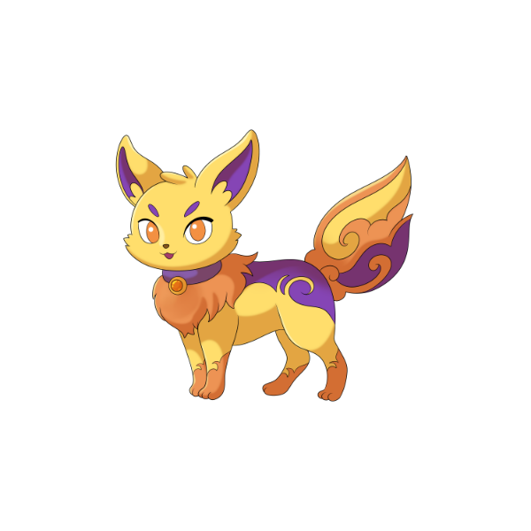
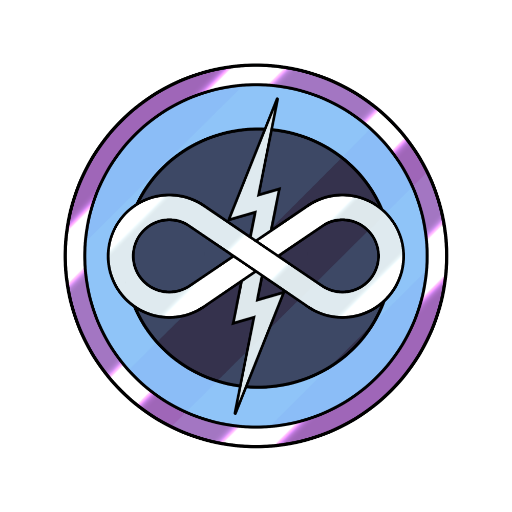
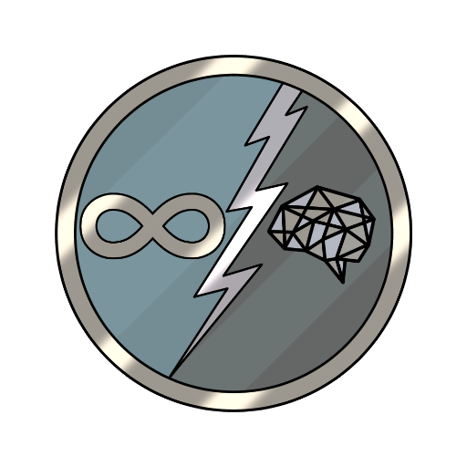
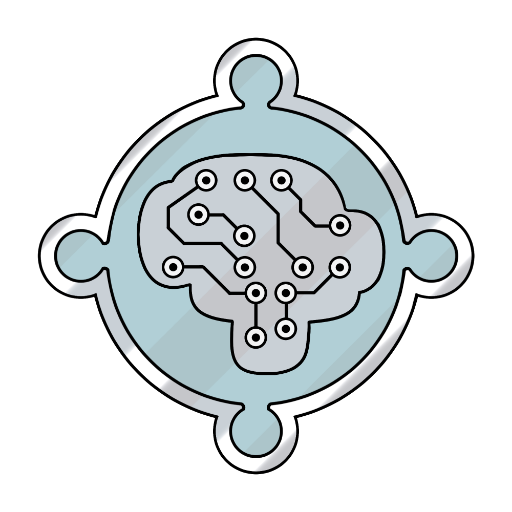
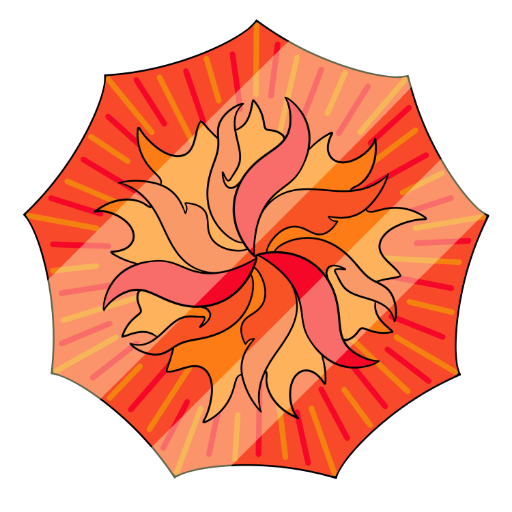
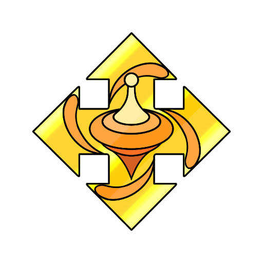
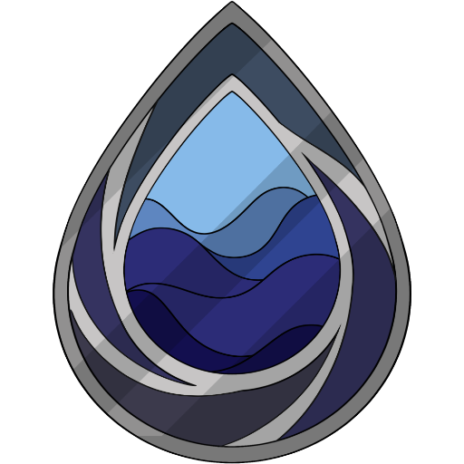

GIOVE
Neurodivergenza
Sei condizioni di neurodivergenza, una per scheda.
SILEN SU GIOVE

Silen 
La forma di Silen dedicata a questa collezione.
Silen in forma giovana accompagna la collezione sulla neurodivergenza: comunicazione, attenzione, sensi ed emozioni. Le sei schede coprono i tre livelli dell'autismo, la sindrome di Tourette, l'ADHD e l'alessitimia.LE LUNE DI GIOVE
Sei condizioni di neurodivergenza, una per scheda.
Ogni scheda ha due voci: Cos'è, la spiegazione chiara, e La luna racconta, come si vive e cosa può aiutare. Divulgazione: non sostituisce il parere di un professionista. Le storie stanno nei libri.

Autismo Livello 1
Il livello indica l'aiuto necessario, non il valore.
L'autismo di livello 1 (DSM-5) indica una persona autistica che ha bisogno di un supporto lieve: può comunicare e vivere in autonomia, ma la comunicazione sociale, la flessibilità e le sensibilità sensoriali restano faticose. Non è autismo poco autentico: il livello descrive l'aiuto necessario, non il valore della persona.
Questa illustrazione è riprodotta su calamite, spille e adesivi.
Vai su Redbubble
Autismo Livello 2
Serve supporto sostanziale, non pazienza generica.
L'autismo di livello 2 indica un bisogno di supporto sostanziale: difficoltà più marcate nella comunicazione, nelle relazioni e nel gestire i cambiamenti, con sensibilità sensoriali forti. Anche qui, il livello misura l'aiuto necessario, non il valore della persona.
Questa illustrazione è riprodotta su calamite, spille e adesivi.
Vai su Redbubble
Autismo Livello 3
Supporto molto sostanziale. La presenza resta intera.
L'autismo di livello 3 indica un bisogno di supporto molto sostanziale, anche nelle attività quotidiane: la comunicazione verbale può essere limitata e i cambiamenti molto destabilizzanti. È il livello di supporto più alto descritto dal DSM-5, e richiede reti di cura dedicate.
Questa illustrazione è riprodotta su calamite, spille e adesivi.
Vai su Redbubble
Sindrome di Tourette
I tic non sono una scelta.
La sindrome di Tourette è un disturbo neurologico caratterizzato da tic motori e vocali involontari che compaiono nell'infanzia. Non è maleducazione né una scelta: i tic possono aumentare con lo stress e attenuarsi con la crescita, e esistono percorsi di cura specifici.
Questa illustrazione è riprodotta su calamite, spille e adesivi.
Vai su Redbubble
ADHD
Non è pigrizia: è un'altra organizzazione delle priorità.
L'ADHD — in clinica, disturbo da deficit di attenzione/iperattività — è una condizione neurosviluppativa che rende difficile regolare attenzione, impulsività e livello di attività. Non è pigrizia: il cervello organizza le priorità in modo diverso, e struttura, strategie e a volte farmaci fanno la differenza.
Questa illustrazione è riprodotta su calamite, spille e adesivi.
Vai su Redbubble
Alessitimia
Le emozioni ci sono. Mancano le parole.
L'alessitimia è la difficoltà a riconoscere, distinguere e descrivere le proprie emozioni. Non è un disturbo dell'umore né freddezza: è una caratteristica, spesso associata ad altre condizioni, che rende le emozioni difficili da mettere in parole.
Questa illustrazione è riprodotta su calamite, spille e adesivi.
Vai su RedbubbleINFORMAZIONI E LICENZE
Una Voce Dal Profondo è un progetto di divulgazione psicologica e narrazione. Le opere sono tutelate da diritto d'autore: i libri escono su Amazon e le illustrazioni sono riprodotte su oggetti da Redbubble — entrambe le piattaforme gestiscono la vendita e mi corrispondono le royalties. Per collaborazioni, richieste professionali o licenze:
Iscriviti alla nostra mailing list
Novità su libri, storie e nuove lune: qualche email, mai di più.
Se il modulo qui sopra non funziona, apri l'iscrizione in una nuova scheda
Ogni riproduzione non autorizzata è vietata.